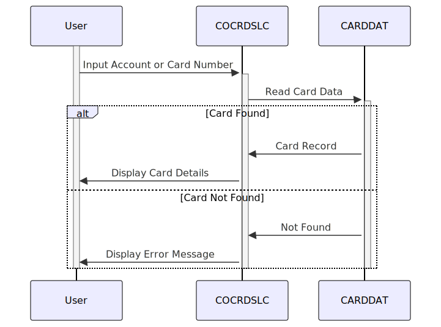

Gerado em: 1º de outubro de 2024
Título do Documento: Especificação do Programa de Recuperação de Detalhes de Cartão de Crédito
Descrição Resumida: Este documento detalha as especificações funcionais para um programa COBOL projetado para recuperar e exibir detalhes do cartão de crédito com base nos números de conta ou cartão fornecidos pelo usuário. Ele utiliza o CICS para processamento de transações e interage com um banco de dados VSAM chamado ‘CARDDAT’.
Histórias do Usuário: Como representante de atendimento ao cliente, preciso acessar rapidamente os detalhes do cartão de crédito de um cliente usando sua conta ou número do cartão para que eu possa auxiliá-lo com eficiência.
Epic Relacionado: 3 - Gestão de Cartão de Crédito
Requisitos Técnicos:
CC-ACCT-ID é numérica e tem 11 dígitos.CC-CARD-NUM é numérica e tem 16 dígitos.CARDDAT.READ com a opção RIDFLD para pesquisar registros específicos com base em WS-CARD-RID-CARDNUM (número do cartão).CARD-RECORD.WS-FILE-ERROR-MESSAGE com detalhes como a operação (ERROR-OPNAME), nome do arquivo (ERROR-FILE) e códigos de resposta CICS (ERROR-RESP e ERROR-RESP2).COCRDSL e CCRDSLA.Modelos Relacionados
CARD-RECORD: Representa um registro de cartão de crédito.
CARD-EMBOSSED-NAME: String - O nome em relevo no cartão de crédito.CARD-EXPIRAION-DATE: String - A data de validade do cartão de crédito.CARD-ACTIVE-STATUS: String - O status do cartão de crédito (por exemplo, ativo, inativo).Configurações:
LIT-CARDFILENAME: CARDDAT - O nome do arquivo de banco de dados do cartão de crédito.Melhorias de Código:
WS-RETURN-MSG, considere usar uma abordagem estruturada de tratamento de erros.CARDDAT for grande, considere implementar indexação ou outras técnicas de aprimoramento de desempenho para recuperação de dados mais rápida.Melhorias de Segurança:
CARDDAT apenas ao pessoal autorizado.Diagrama Conceitual:
–Made by “Smart Engineering” (by Compass.UOL)–